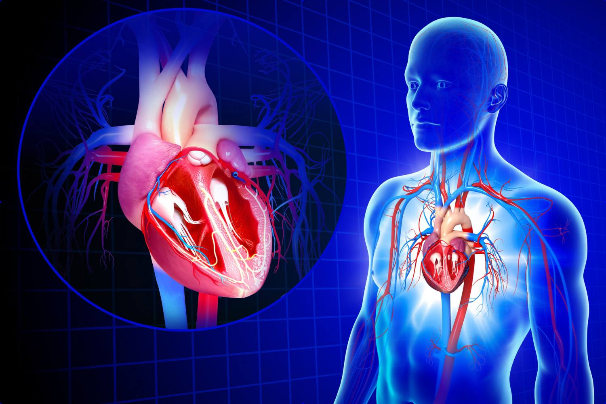
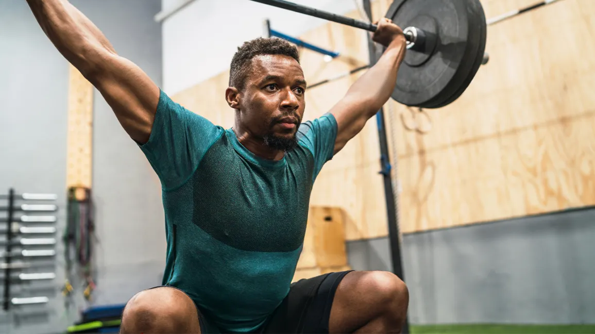

Benefits of Exercise
Regular exercise offers a multitude of benefits that encompass physical, mental, and emotional well-being. Engaging in consistent physical activity promotes cardiovascular health by strengthening the heart and improving circulation, reducing the risk of heart disease, stroke, and high blood pressure. Additionally, exercise aids in weight management by burning calories and building lean muscle mass, contributing to a healthy body composition. Beyond physical health, exercise plays a pivotal role in mental and emotional wellness, serving as a powerful tool for stress reduction and mood enhancement. Physical activity stimulates the release of endorphins, neurotransmitters in the brain that act as natural mood lifters, helping to alleviate symptoms of anxiety, depression, and stress. Moreover, regular exercise fosters better sleep patterns, boosts energy levels, and enhances overall quality of life. By incorporating exercise into daily routines, individuals not only improve their physical fitness but also cultivate a positive outlook and resilient mindset conducive to long-term health and happiness..
Types of Exercises
There are various types of exercises to suit different preferences and fitness goals:
- Push-ups: Start in a plank position with your hands shoulder-width apart and arms fully extended. Lower your body until your chest nearly touches the floor while keeping your back flat. Push back up to the starting position, extending your arms fully. Keep your core engaged and your body in a straight line throughout the movement.
- Squats: Stand with your feet shoulder-width apart, toes slightly turned out. Lower your body by bending your knees and hips, as if you're sitting back into a chair. Keep your chest up and your back straight, and lower until your thighs are parallel to the ground. Push through your heels to return to the starting position, squeezing your glutes at the top.
- Pull-ups: Grip an overhead bar with your hands slightly wider than shoulder-width apart, palms facing away from you. Hang with your arms fully extended, shoulders pulled down and back. Pull your body up until your chin clears the bar, keeping your core engaged and back straight. Lower yourself back down with control to complete one repetition.
- Burpees: Start in a standing position, then squat down and place your hands on the ground in front of you. Jump your feet back into a plank position, keeping your body in a straight line. Perform a push-up, then jump your feet back towards your hands. Explosively jump up into the air, reaching your arms overhead. Land softly and immediately lower back into the next repetition.
Fitness Tips
Here are some additional fitness tips:
Prioritize Proper Nutrition: Fuel your body with nutritious foods that provide the energy and nutrients needed for optimal performance and recovery. Aim for a balanced diet rich in fruits, vegetables, lean proteins, whole grains, and healthy fats. Stay hydrated by drinking plenty of water throughout the day. Focus on Form and Technique: When performing exercises, prioritize proper form and technique to prevent injury and maximize results. Start with lighter weights and gradually increase the intensity as you become more comfortable with the movements. If you're unsure about proper form, consider working with a certified personal trainer. Listen to Your Body: Pay attention to how your body feels during exercise and adjust accordingly. If you experience pain or discomfort, stop the activity and seek guidance from a healthcare professional. Rest when needed to allow your body to recover and prevent overtraining. Warm Up and Cool Down: Always start your workout with a proper warm-up to prepare your muscles and joints for exercise. This may include dynamic stretches, light cardio, or mobility exercises. Similarly, end your workout with a cooldown routine to help reduce muscle soreness and promote recovery. Stay Consistent: Consistency is key to seeing progress and achieving your fitness goals. Aim to exercise regularly, ideally at least 3-5 times per week. Find activities that you enjoy and make them a part of your routine to maintain motivation and adherence. Get Adequate Rest and Recovery: Allow your body time to rest and recover between workouts. This includes getting enough sleep each night, as sleep is crucial for muscle repair, hormone regulation, and overall well-being. Incorporate rest days into your weekly schedule to prevent burnout and promote recovery.
Additional Resources
For more information and guidance on exercise and fitness: